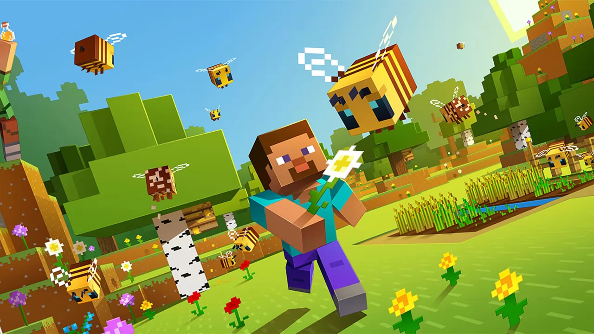

Minecraft
Minecraft is one of the most played games in the world, it has more than 140 million active users per month, and this is not the most impressive figure.
Minecraft is an open-world sandbox video game developed by Mojang Studios and originally created by Swedish programmer Markus Persson, aka Notch, using the Java programming language. It was first released on May 17, 2009, and the full game was released on November 18, 2011, on PC. Minecraft was then released on many other platforms and, with 200 million copies sold, it is the most purchased video game ever.
if you want to downlode Minecraft, this is the link for you:
Minecraft downlode In Minecraft, players can freely explore a procedural 3D world made up of blocks, search for ore, craft various tools and objects, and build structures. Depending on the game mode, it is possible to fight CPU-controlled entities, but also to cooperate or fight against other real players. The main game modes are Survival, where players must find resources and avoid dying, and Creative, where you have access to infinite resources and the ability to fly.
Minecraft has been positively judged by critics: it has won numerous awards and has been described as one of the most influential games of the 2010 decade. Social media, parodies, and MineCon have played an important role in the fame of the game. It has also been used in the education sector, especially in computer science (since it is possible to create virtual computers within the game). In 2014, Mojang was bought by Microsoft for $ 2.5 billion. Numerous spin-offs have been drawn from Minecraft, such as Minecraft: Story Mode, Minecraft: Dungeons, Minecraft Earth, and Minecraft Education Edition, projects later canceled due to lack of funds.
Game modes
Survival mode
The player attempting to make a stone axe by placing the required materials into the crafting grid, a 3x3 block of item spaces hovering over the standard inventory, which is filled with other items. The crafting menu in Minecraft, showing the crafting recipe of a stone axe as well as some other blocks and items in the player's inventory. In survival mode, players have to gather natural resources such as wood and stone found in the environment in order to craft certain blocks and items. Depending on the difficulty, monsters spawn in darker areas outside a certain radius of the character, requiring players to build a shelter at night. The mode also has a health bar which is depleted by attacks from mobs, falls, drowning, falling into lava, suffocation, starvation, and other events. Players also have a hunger bar, which must be periodically refilled by eating food in-game, except in peaceful difficulty. If the hunger bar is depleted, automatic healing will stop and eventually health will deplete. Health replenishes when players have a nearly full hunger bar or continuously on peaceful difficulty.

Players can craft a wide variety of items in Minecraft. Craftable items include armor, which mitigates damage from attacks; weapons (such as swords or axes), which allows monsters and animals to be killed more easily; and tools, which break certain types of blocks more quickly. Some items have multiple tiers depending on the material used to craft them, with higher-tier items being more effective and durable. Players can construct furnaces, which can cook food, process ores, and convert materials into other materials. Players may also exchange goods with a villager (NPC) through a trading system, which involves trading emeralds for different goods and vice versa.
Hardcore mode
Hardcore mode is a survival mode variant that is locked to the hardest setting and has permadeath. If a player dies in a hardcore world, they are no longer allowed to interact with it, so they can either be put into spectator mode and explore the world or delete it entirely.[52] This game mode can only be accessed within the Java Edition.
Creative mode
In creative mode, players have access to nearly all resources and items in the game through the inventory menu, and can place or remove them instantly. Players can toggle the ability to fly freely around the game world at will, and their characters do not take any damage and are not affected by hunger. The game mode helps players focus on building and creating projects of any size without disturbance.